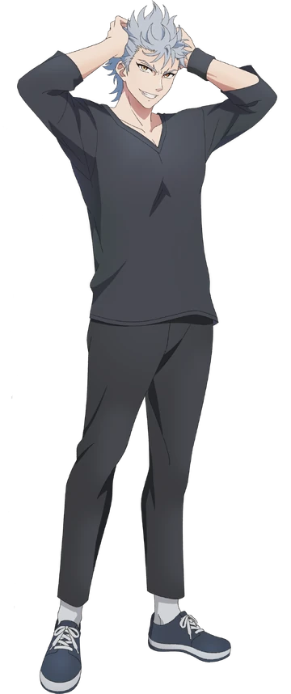

Keigo Magami - Wolf
Sobre
Eu sou o Wolf. Meio humano, meio ogro… e totalmente explosivo, eu sei. Nasci forte demais, barulhento demais e um pouco difícil de lidar, mas isso não quer dizer que eu seja um monstro. Eu só… sou eu. Mesmo com toda essa força descontrolada, eu só quero proteger as pessoas importantes pra mim. E, por mais que eu não pareça, eu tenho um coração — grande demais até. Só não espalha isso por aí.
Personalidade
Impulsivo e explosivo, age antes de pensar
Extremamente leal com quem gosta
Se irrita fácil, mas também se envergonha fácil
Tem um lado sensível que tenta esconder
Sincero e direto, mesmo quando não deveria
Caótico, barulhento e inesperadamente carismático